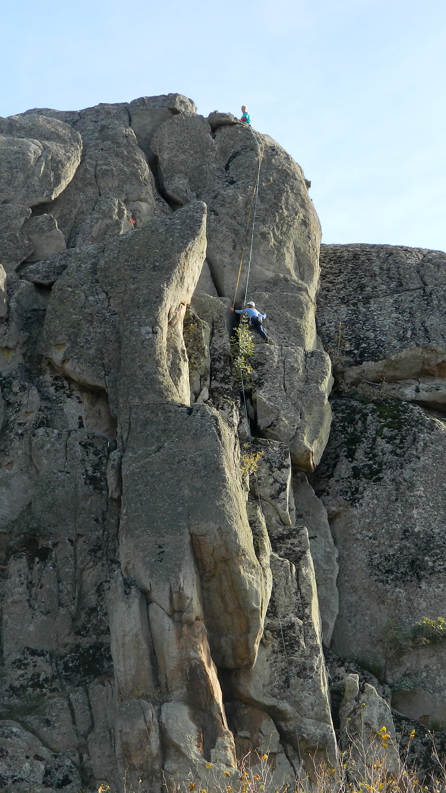
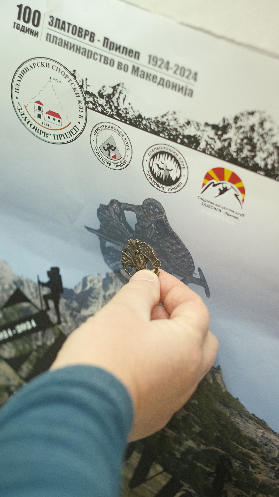
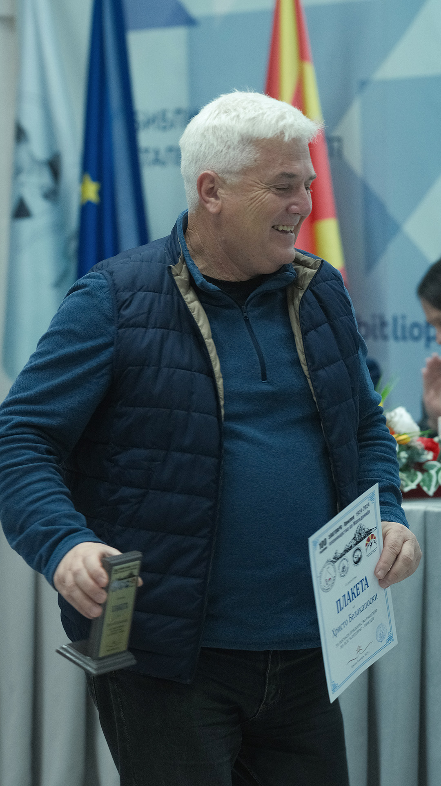
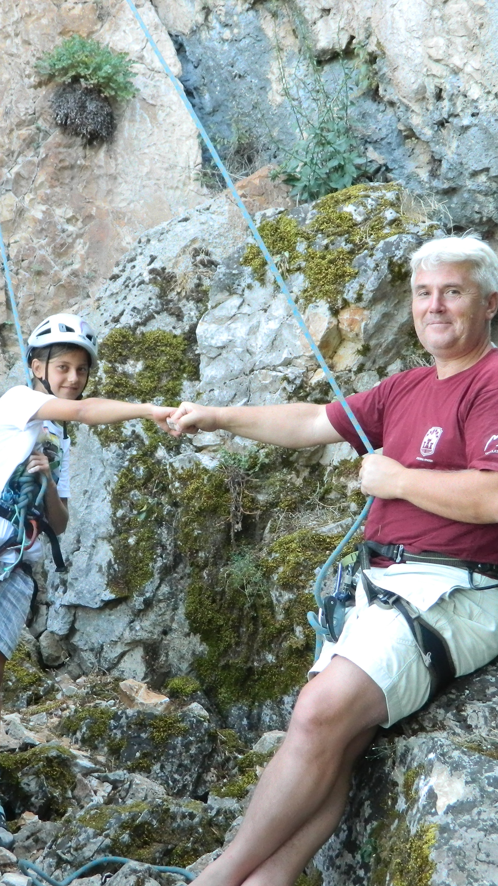

MISSION

MORE THAN
just a sport
SKK Zlatovrv is a club fully dedicated to sport climbing. As the great Nejc Zaplotnik said,
climbing is not just a sport, it is a way of life. Sport climbing is not only a physical challenge – it is a journey deep within oneself.
Reaching new heights on the rocks helps us achieve new personal growth milestones. With every step and every new direction, we not only test our physical
abilities and boundaries but also strengthen our spiritual will. Our mission is to nurture team spirit and individual achievements,
where every success, regardless of size, brings a sense of fulfillment and freedom.
HISTORY
ESTD
1924
Zlatovrv Club was established in 1924, marking its place in history as the oldest mountaineering club in the country.
Over the years, Zlatovrv - Prilep, named after the Zlatovrv peak above Treskavec in Prilep, achieved significant milestones,
including first ascents and important traverses both locally and internationally. The club's members included prominent
partisans, and its post-war revival was led by the working class of the 11th October factory.
At that time, the club boasted around 200 active members. The club was composed of several sections, including mountaineering,
speleology, orienteering, and alpine climbing. This structure lasted until the early 2000s, when changes within the federation forced
the establishment of separate clubs. Thus, from one club emerged five independent clubs, including our Sport Climbing Club Zlatovrv - Prilep.

INSTRUCTOR

merits
SKK Zlatovrv is led by a certified sport climbing instructor, Prof. Hristo Belakaposki.
A physical education teacher at an elementary school in Prilep by profession,
he is an active athlete with a deep love and dedication to mountains and sports.
In 2024, he was awarded a plaque for outstanding merits and significant achievements in sport climbing.

↓
↓